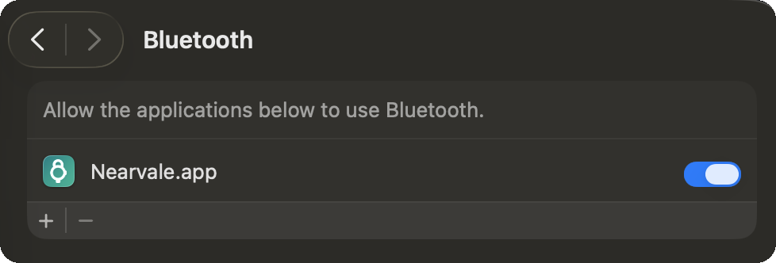
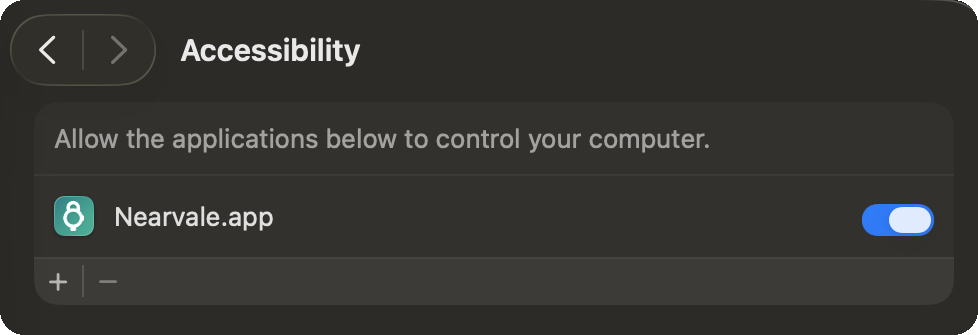
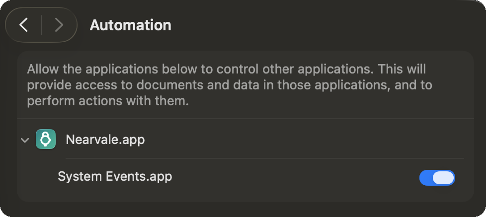
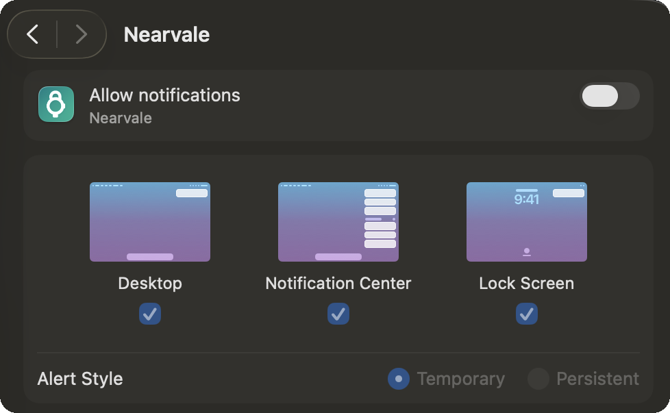

Nearvale Help
Nearvale is a macOS menu-bar app. Walk away wearing your Apple Watch and the Mac locks; come back and the screen wakes. Unlocking is done by macOS's built-in "Unlock with Apple Watch".
1. First run
- Open the app. A menu-bar icon appears; follow the onboarding.
- Work through the permission checklist in the first onboarding step: Bluetooth is required; the default lock method also needs Accessibility and Automation (or switch to "Lock Screen (system API, no permission needed)" in one click); notifications are optional. See "2. Permissions" for each one.
- Pick and bind your Apple Watch in Settings > Device. Automatic locking does nothing until a watch is bound; the menu bar tells you so.
- Turn on "Unlock with Apple Watch" in System Settings > Touch ID & Password. Otherwise the screen only wakes and you type your password.
- (Recommended) Settings > Distance > Distance calibration wizard: stay in your usual seat for 10 seconds to generate thresholds that fit your room.
2. Permissions
Every system permission Nearvale uses is listed under Settings > Permissions, with what it is for and its current state. Use the button next to an item: if you haven't been asked yet, the system prompt appears right away; if you declined before, the matching System Settings page opens. When a required permission is missing, the menu-bar panel shows a "Fix" button.
| Permission | When it's needed | Where in System Settings |
|---|---|---|
| Bluetooth | Always | Privacy & Security > Bluetooth |
| Accessibility | With the Control-Command-Q lock method (default) or managed password entry | Privacy & Security > Accessibility |
| Automation (System Events) | Same as above; needed together with Accessibility | Privacy & Security > Automation > Nearvale |
| Notifications | Optional: alerts about locks, missing permissions and trial expiry | Notifications > Nearvale |
| Location Services | Optional: Wi-Fi name and location-based trusted places | Privacy & Security > Location Services |
| Login item | Optional: when "Launch at login" is on | General > Login Items & Extensions ("Login Items" on macOS 14) |
Rather not grant Accessibility and Automation? Choose "Lock Screen (system API, no permission needed)" or "Turn off display only" under Settings > General > Lock Method and neither is needed (unless you use managed password entry). The first onboarding step offers the same switch.
Bluetooth
macOS asks the first time you open Nearvale; choose Allow. If you declined: System Settings > Privacy & Security > Bluetooth, turn on Nearvale.

Accessibility
System Settings > Privacy & Security > Accessibility, turn on Nearvale (macOS asks for your login password or Touch ID). When you use the button in Settings > Permissions, Nearvale first adds itself to this list, so you only need to flip the switch; if it isn't listed, click "+" below and pick Nearvale from Applications.

Automation (System Events)
Control-Command-Q locking asks the built-in System Events to send the shortcut, so Nearvale also needs permission to control it. The first time it locks, or when you click "Allow…" in Settings > Permissions, macOS asks whether Nearvale may control System Events; choose Allow. If you declined: System Settings > Privacy & Security > Automation, expand Nearvale and turn on System Events. Apps can't be added to this list by hand; if Nearvale isn't there, go back to Settings > Permissions and click "Allow…" so macOS asks again.

Notifications
System Settings > Notifications > Nearvale, turn on "Allow notifications". Auto-lock works without it; you just won't be told about locks or missing permissions.

Unlock with Apple Watch
This is a macOS feature rather than a Nearvale permission, but unlocking when you come back depends on it: System Settings > Touch ID & Password ("Login Password" on Macs without Touch ID), turn on the switch next to your Apple Watch. If the option is missing, make sure the watch and the Mac use the same Apple Account with two-factor authentication, Wi-Fi and Bluetooth are on on the Mac, and the watch has a passcode.
Differences between macOS versions
Nearvale supports macOS 14 and later. All of them use the redesigned System Settings, and everything under Privacy & Security is in the same place. The only differences:
- Login items: "General > Login Items" on macOS 14, renamed "General > Login Items & Extensions" from macOS 15.
- The screenshots above are from macOS 26; corners and translucency look slightly different on macOS 14 / 15, but the switches are in the same place.
- From macOS 15, an app blocked by macOS can no longer be opened with right-click > Open; click "Open Anyway" at the bottom of System Settings > Privacy & Security instead.
Switched on but still not working?
- Select Nearvale in the System Settings list, click "−" below to remove it, then use the button in Settings > Permissions to add it again.
- After replacing or reinstalling the app, macOS may treat it as a new app and ask again.
- On a company-managed Mac these switches may be locked; ask your administrator.
- The log under Settings > Diagnostics says why each lock didn't happen, including which permission was missing.
3. Menu bar
| Icon state | Meaning |
|---|---|
| Near | Strong watch signal; stays unlocked |
| Away | Watch has been away for the configured time; locked or about to lock |
| Searching | Looking for the watch signal |
| Paused | You paused monitoring temporarily |
| Off | Monitoring is off |
The panel lets you lock now, pause, see the live signal, the signal zone it falls in (Near / Transition / Away) against the thresholds, and tap "Was that a false lock?" to report one.
4. Settings
- General: the auto-lock switch, lock method, interface language (System Default / 简体中文 / English; takes effect after Nearvale restarts, and shows English when your system language is neither Simplified Chinese nor English), menu bar text, notifications, confirm before locking, and launch at login.
- Device: bind or unbind the watch; optionally pick up to 3 "auxiliary devices" (iPhone, AirPods, …): if the watch merely stops advertising while a device you chose is still nearby, locking is held off. Auxiliary devices only postpone locks caused by "signal lost" (for at most 2 minutes); they never lock the Mac by themselves and cannot override a clearly weak watch signal. An iPhone may stop advertising once its screen is off, so results depend on the device's state.
- The watch's Bluetooth address changes from time to time: once the old address has gone quiet and a same-named new address has kept showing up for about 6 seconds, the app re-links the binding automatically and notifies you. With the "Managed password entry (high risk)" unlock strategy it never re-links by itself; it notifies you to bind again manually (so a look-alike device cannot take over the binding).
- On a day you forgot the watch: when the signal source has been silent for about 3 minutes, the menu bar warns that automatic locking is not in effect and offers "Use …", which lets a chosen auxiliary device (such as your iPhone) stand in for the watch for up to 24 hours; tap "Use Watch Again" any time. Note: if the phone is left on the desk while you walk away, the Mac will not lock.
- Distance: the "near" and "away" thresholds, the wait after leaving and the signal-lost timeout (the threshold band shows where the current signal falls), plus the calibration wizard and the distance model. The "estimated distance" on that page is only a rough guide (indoors it can be off by several times); locking looks only at signal strength and the thresholds. If the automatic calibration at binding time finds the watch signal too weak to tell "near" from "away" reliably, it tells you and writes nothing.
- Exceptions: two optional settings (both off by default) plus trusted places.
- Defer lock during meetings / presentations: when an app is preventing display sleep, locking is postponed and made up afterwards, with a hard upper limit.
- Lock again after manual unlock: if you unlock with your password while the watch is still far, lock again after the keyboard and mouse have been idle for a while.
- Trusted places: save the current network as a "trusted place" (home, office); auto-lock pauses while you are connected to it and resumes when you leave. The menu bar shows a notice, and Resume re-enables locking for the current stay. Network places are recognized by their gateway and need no permission; with Location Services allowed you can also "Trust current location" (radius 100 / 200 / 500 m), which keeps working when you switch networks at the same spot (for example a phone hotspot). A network or a location match counts as being at the place. If you are not on site, or the fix is off, click "Choose on Map…": click the map to place the center, the circle follows the radius, saved places show as gray circles, and you can also type "latitude, longitude". While the map is open, its imagery is requested from Apple Maps (the location you pick is stored on this Mac only). A Mac's positioning is only so accurate, so a poor or missing fix is never treated as being at a place; locations are compared on this Mac only and never uploaded. Other devices on the same network can spoof the fingerprint and a location can drift, so this is a convenience feature, not a security boundary.
- Permissions: what each system permission is for, its current state and where to grant it; see "2. Permissions".
- Diagnostics: false-lock stats and auto tuning (by trigger cause: a false lock from a weak signal adjusts the thresholds, one from interrupted advertising adjusts the "signal lost" timeout; after a long run without false locks it slowly returns toward the values you calibrated), lock history (time, reason and signal of every lock that ran; stored on this Mac, exportable as CSV), diagnostic log.
- License (release builds only): a 14-day free trial with every feature and no card required, then your choice of an annual subscription or a lifetime license. Both have the same features and work on up to 3 Macs at a time. You get system notifications 3 days and 1 day before the end and when it ends (the "ended" notice ignores the notifications switch, because auto-lock has stopped by then). Once the trial is over, auto-lock, manual lock and settings are all disabled; only buying and entering a key remain.
- After activation, the page shows your plan: "Lifetime License" or "Annual Subscription Active". Subscribers get a "Manage Subscription…" button that opens the Dodo Payments customer portal; enter the email you bought with and sign in from the emailed link to see your renewal date, cancel, or change your payment method.
- Switching from the subscription to lifetime: after buying lifetime, expand "Change License Key", paste the new key and activate. The old key is deactivated on this Mac automatically. The subscription is not cancelled for you, so cancel it in the customer portal.
- Lost your key? Click "Can't find your key?" under the key field to open the customer portal, which lists every key you bought.
- Before switching computers, click "Deactivate This Mac" to free up the activation slot. Builds you compile yourself have licensing off by default and have no such page.
- About: version, rerun onboarding, check for updates, open this manual.
5. FAQ
The watch is right next to the Mac but it locked. Why?
Look at the live signal in the menu bar. With the watch close it is about -42 dBm, and the default "away" threshold of -70 dBm is usually enough. If it still misfires, run the calibration wizard, or mark the lock as a false lock so the app relaxes things (the lock history shows whether each lock was triggered by a weak signal or by signal loss).
I walked away and nothing locked.
Check, in order: a watch is bound; Bluetooth is granted; with the Control-Command-Q lock method, both Accessibility and Automation are granted (if not, the menu bar shows "Fix" and you get a notification); the meeting deferral is not on while some app is blocking display sleep; monitoring is not paused. The log under Settings > Diagnostics states why each lock did or did not happen.
It wakes the screen but does not unlock.
Unlocking is macOS, not this app. Make sure "Unlock with Apple Watch" is on in System Settings > Touch ID & Password, and the watch is unlocked and on your wrist; if the switch is missing, see "2. Permissions".
Do I have to re-authorize after updating?
After you replace the app, macOS may treat it as a new app and ask again for Bluetooth, Accessibility and so on: open Settings > Permissions and go through the list. If a switch looks on but is still reported as not allowed, remove Nearvale from that System Settings list and add it again.
What happens when the trial ends? (release builds only)
Auto-lock stops: your Mac will no longer lock when you walk away. The app says so clearly and sends a system notification. Your settings and lock history are kept, and everything resumes the moment you subscribe or buy and enter a key. Once activated, the app checks online every 7 days; being offline is fine for 30 days, and only an explicit "invalid" answer from the server turns it off.
What if my subscription ends or a renewal fails? (release builds only)
When the server reports the license as invalid (the subscription was cancelled and has run out, a renewal payment failed, or the purchase was refunded), auto-lock stops, the app sends a system notification, and the License page shows "Subscription Ended" or "License No Longer Valid". Once you pay in the customer portal, the app re-checks about every 6 hours and resumes on its own, with no need to re-enter the key; click "I've Paid, Check Again" if you are in a hurry. You can also switch to lifetime and enter the new key. Cancelling does not stop anything right away: you keep using it until the paid year ends.
Does it use the network?
Only in three cases. (1) When you click About > Check for Updates: one request to GitHub reads the latest version number; it carries no information about your Mac, and nothing is downloaded or installed automatically. (2) While the map window under Exceptions > Choose on Map… is open: the map imagery for the visible area is requested from Apple Maps. The location you pick is never uploaded, and nothing is requested once the window is closed. (3) Only in release builds with licensing enabled: the trial never touches the network; the license key and a random device label (never your computer name) are sent to Dodo Payments only when you activate with a key, for the check every 7 days once activated (about every 6 hours while the license is reported invalid, so that it resumes on its own after renewal), and when you click Deactivate. A failed check (for example, offline) never locks you out — there is a 30-day offline grace period.
6. Updating
Click "Check for Updates" in Settings > About. If a newer version exists, "Download" opens the GitHub Releases page. Download the DMG and drag the app into Applications to replace the old one. You can also download the latest version at any time from nearvale.app.
7. Reporting problems
Email support@nearvale.app or open an issue at GitHub Issues, and attach the log exported from Settings > Diagnostics (it is redacted). For license and refund questions, please use email and never post your license key in a public issue.